| 一、帝国CMS的碎片功能介绍 |
| 什么是碎片？ |
| 碎片也就是网页中某一块信息的调用与管理。像门户中页面每块信息调用就是一个碎片，让不同管理员更新不同的区域块信息，如图： 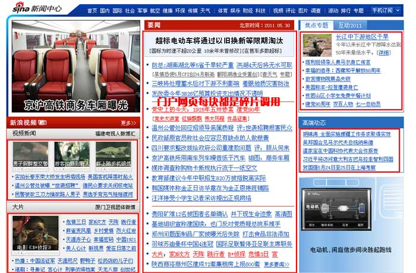 |
| 帝国CMS的碎片功能介绍 |
| 有了帝国CMS的碎片，可以不限栏目、表、模板和只限站内等，可以调用任何信息到网站，让网站信息变得更加的灵活和高效。 碎片是门户网站必备的功能之一。下面我们来说明一下门户网站为什么需要碎片功能和碎片在帝国CMS中的应用： 第一、大数据量情况下的考虑： 如果当你的信息达到几百万、几千万数据以上，如果用标签调用需要从这么大的数据量的数据表中查找出符合的信息，效率是很低的，而碎片调用信息确是为解决这一问题而存在，碎片集合的总信息合起来不会超过几千、几万数据。从几百万数据表中查找信息快还是从几千的数据表中查找信息快？显而易见，大数据量下碎片调用更具优势。 第二、碎片也是为帝国CMS多表信息集合调用而存在，是结合帝国系统实际应用中的创新： 相对于门户网站中的系统，帝国的碎片更灵活，而且是结合帝国系统本身实际应用开发的，更加实用。6.0以前版本我们是用分表将信息分离出去，而6.5版以上的碎片功能则是将分表信息又重新集合。所有表的信息都能推送给一个碎片或多个，碎片可调用所有表信息。在帝国CMS6.5以上中此碎片类型叫“动态信息碎片”，用来调用所有信息表中的信息。而一般门户系统中碎片都是由编辑手动修改，无自动调用原来信息表特点，编辑的工作量很大。这是帝国CMS在碎片功能上的创新。 第三、碎片也为一些无规则的内容显示提供方便的方案： 因为无规则的东西是无法用程序循环输出的，所以就有了帝国CMS6.5以上的第二个碎片类型：“代码碎片”。编辑可手动编辑调用内容和代码、并且支持历史备份，一旦修改错误可以马上还原备份记录。 第四、碎片也为调用外部数据而存在： 可以将外部的信息和帝国CMS本身的信息混合调用，于是就有了帝国CMS6.5以上的第三个碎片类型：“静态信息碎片”。比如：帝国CMS+论坛+SNS+商城+...，你要把推荐的信息全部都放在一起调用，那这个功能就非常有用了。 第五、碎片也同时实现了单信息发布到多栏目/页面调用： 支持将一个信息推送到多个碎片中调用。 第六、在大数据量情况下，帝国CMS采用碎片调用和模板中不加标签调用效率是相当的： 回顾下6.0版我们测试的“2千万数据、17.3GB数据库下帝国CMS超强生成速度”这个测试是在内容页不增加调用标签的情况下的速度，而6.5版本以上如果你内容页采用碎片调用，完全可以实现增加更复杂的调用情况下接近测试的效率。 帝国CMS的碎片功能有以下特点： (1)、碎片分类管理：可以按分类来搜索碎片，特别适合在碎片数量多的情况下非常有用； (2)、碎片管理：碎片可设定使用的标签模板、是否开启等。 (3)、碎片信息更新与管理：只有碎片分配更新权限的用户才有权限更新； (4)、支持三种碎片类型：静态信息碎片、动态信息碎片、代码碎片； (5)、可按用户组、部门、帐号分配碎片更新权限，并且支持越权限推送设置； (6)、内置碎片调用标签“[spinfo]碎片变量名,显示条数,标题截取数[/spinfo]”，可按碎片调用信息； (7)、可推送任意表或任意栏目的信息到动态信息碎片； (8)、支持设定单个碎片存放最大的信息数量，减少冗余数据，调用效率更高。 |
| 二、碎片使用步骤 |
| 碎片使用一般步骤： |
| 1、增加碎片； 2、修改模板在要显示碎片内容的地方加上碎片标签调用碎片； 3、更新碎片里维护碎片显示内容。（碎片里设置更新权限的用户才有权限查看与更新） |
| 动态信息碎片可以在管理信息时将信息直接推送到碎片，支持多表推送。 |
| 三、帝国CMS的三种碎片用法 |
| 帝国CMS共支持三种碎片方式： |
| 1、静态信息碎片 |
| 有以下两种录入方式： (1)、以手动方式增加信息的标题、链接、简介等内容。 (2)、通过信息ID获取信息内容。 |
| 2、动态信息碎片 |
| 有以下两种录入方式： (1)、管理信息页面里推送信息到碎片。 (2)、手动指定要调用的信息ID。 |
| 3、代码碎片 |
| 手动可视化或代码下编辑调用内容。（支持自动备份，并且可还原备份） |
| 四、静态信息碎片使用 | ||||||||||||||||||||||||||||
| (一)、增加碎片： | ||||||||||||||||||||||||||||
1、登录后台>“栏目”>“碎片管理”>“管理碎片”>“增加碎片”，进入增加碎片界面： |
||||||||||||||||||||||||||||
| 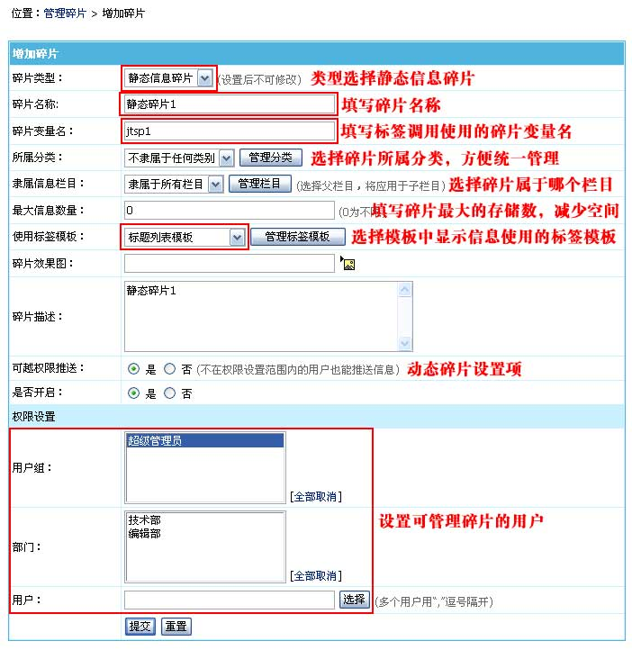 | ||||||||||||||||||||||||||||
|
||||||||||||||||||||||||||||
| 2、增加碎片后返回管理碎片页面，即可看到我们刚才增加的碎片： | ||||||||||||||||||||||||||||
| 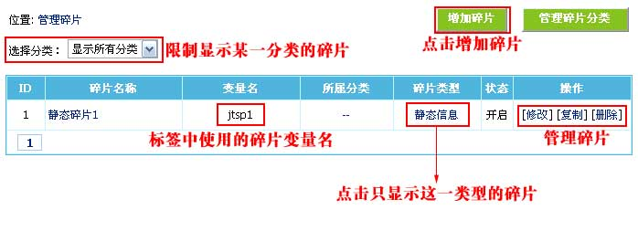 | ||||||||||||||||||||||||||||
| (二)、修改模板在要显示碎片内容的地方加上碎片标签调用碎片。 | ||||||||||||||||||||||||||||
| 1、调用碎片的信息标签语法： | ||||||||||||||||||||||||||||
| [spinfo]碎片变量名,显示条数,标题截取数[/spinfo] | ||||||||||||||||||||||||||||
| 例子：[spinfo]'jtsp1',5,36[/spinfo] | ||||||||||||||||||||||||||||
| 2、将碎片调用标签加到模板中要显示信息的位置。 | ||||||||||||||||||||||||||||
| (三)、更新碎片里维护碎片显示内容 | ||||||||||||||||||||||||||||
| 1、登录后台，单击“栏目”菜单，选择“更新碎片”子菜单，进入更新碎片信息界面：(直接点快捷菜单的更新碎片也可以) | ||||||||||||||||||||||||||||
| 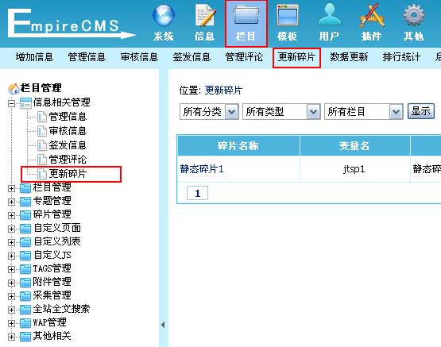 | ||||||||||||||||||||||||||||
| 2、进入更新碎片信息界面： | ||||||||||||||||||||||||||||
| 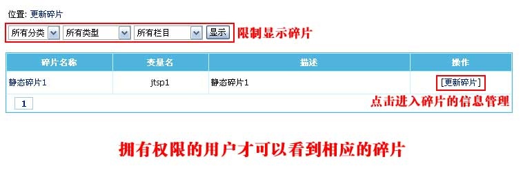 | ||||||||||||||||||||||||||||
| 3、点击“静态碎片1”的“[更新碎片]”，进入碎片的信息管理： | ||||||||||||||||||||||||||||
| 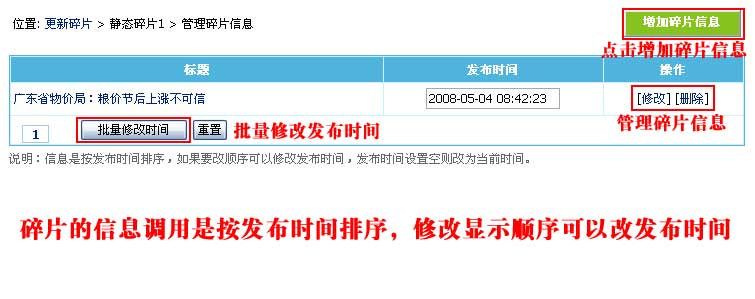 （信息是按发布时间排序，如果要改顺序可以修改发布时间，发布时间设置空则改为当前时间。） |
||||||||||||||||||||||||||||
| 4、点击上面的信息“修改”，进入碎片信息修改页面： | ||||||||||||||||||||||||||||
| 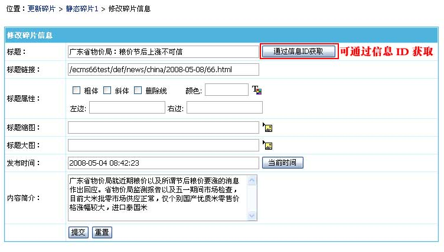 | ||||||||||||||||||||||||||||
|
||||||||||||||||||||||||||||
| 5、更新碎片的信息后，生成模板调用碎片的页面就可以看到我们增加的碎片信息。 |
| 五、动态信息碎片使用 |
| (一)、增加碎片： |
1、登录后台>“栏目”>“碎片管理”>“管理碎片”>“增加碎片”，进入增加碎片界面： |
| 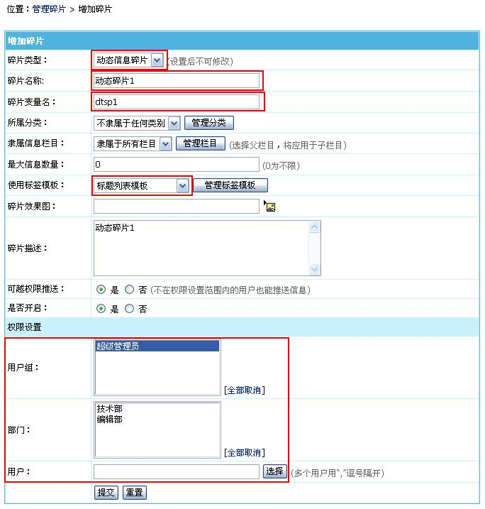 |
| (二)、修改模板在要显示碎片内容的地方加上碎片标签调用碎片。 |
| 1、调用碎片的信息标签语法： |
| [spinfo]碎片变量名,显示条数,标题截取数[/spinfo] |
| 例子：[spinfo]'dtsp1',5,36[/spinfo] |
| 2、将碎片调用标签加到模板中要显示信息的位置。 |
| (三)、更新碎片里维护碎片显示内容 |
| 1、增加动态碎片后，管理信息页面就可以将信息推送到我们增加的碎片： |
| 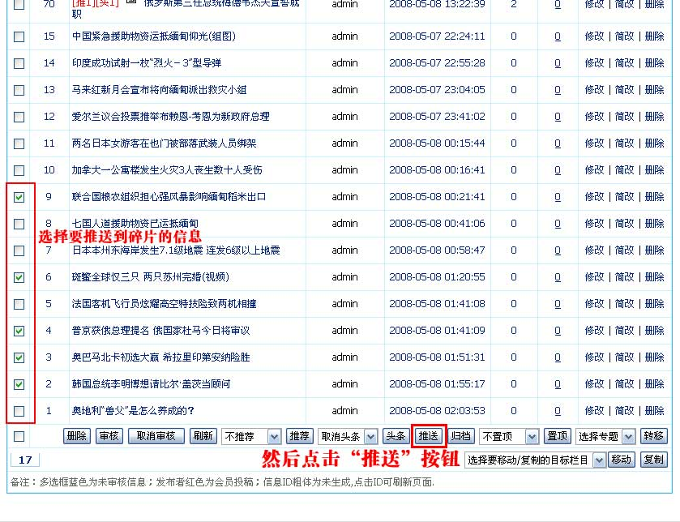 |
| 2、管理信息页面点击“推送”按钮，进入加入碎片选择页面： |
| 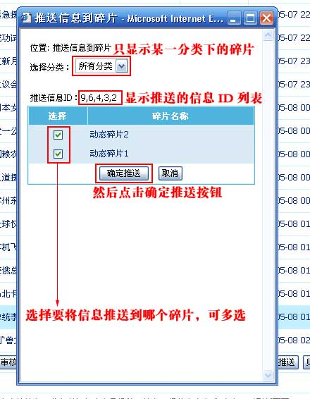 |
| 3、推送完信息，我们可以进入更新碎片信息界面，查看我们刚推送的信息： |
| 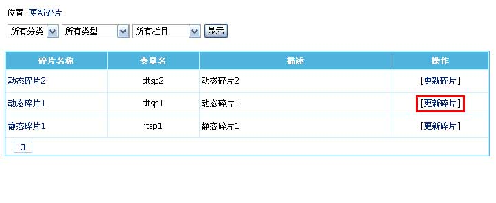 |
| 4、点击“动态碎片1”的“[更新碎片]”，进入碎片的信息管理，看到我们刚推送的信息： |
| 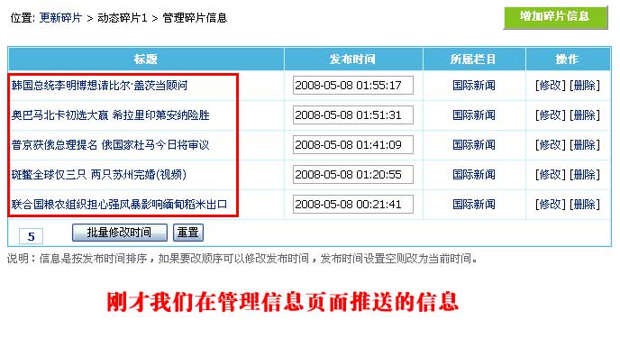 （信息是按发布时间排序，如果要改顺序可以修改发布时间，发布时间设置空则改为当前时间。） |
| 5、除了用推送的方式，你还可以手动增加，点击上面的“增加碎片信息”： |
| 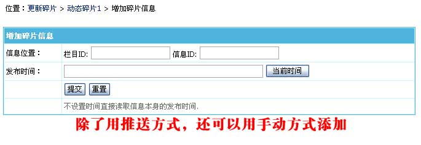 |
| 5、更新碎片的信息后，生成模板调用碎片的页面就可以看到我们推送或增加的碎片信息。 |
| 六、代码碎片使用 |
| (一)、增加碎片： |
1、登录后台>“栏目”>“碎片管理”>“管理碎片”>“增加碎片”，进入增加碎片界面： |
| 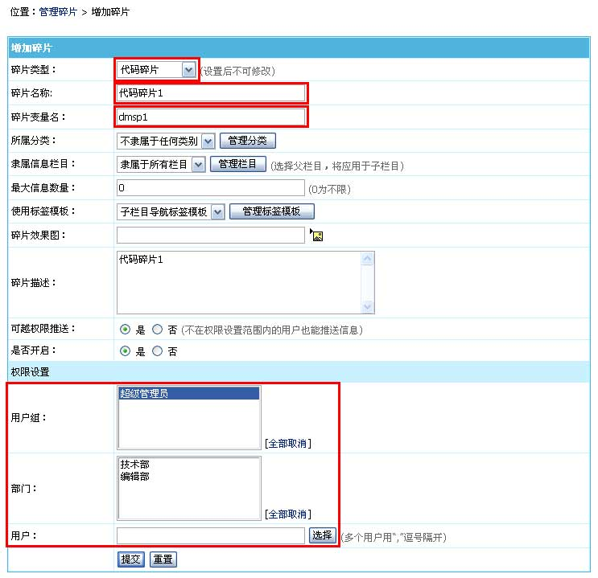 |
| (二)、修改模板在要显示碎片内容的地方加上碎片标签调用碎片。 |
| 1、调用碎片的信息标签语法： |
| [spinfo]碎片变量名,显示条数,标题截取数[/spinfo] |
| 例子：[spinfo]'dmsp1',0,0[/spinfo] |
| 2、将碎片调用标签加到模板中要显示信息的位置。 |
| (三)、更新碎片里维护碎片显示内容 |
| 1、进入更新碎片信息界面，可以看到我们刚才增加的代码碎片： |
| 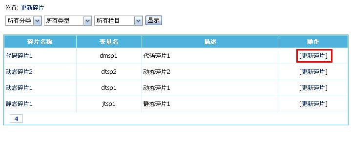 |
| 2、点击“代码碎片1”的“[更新碎片]”，进入代码碎片内容修改： |
| 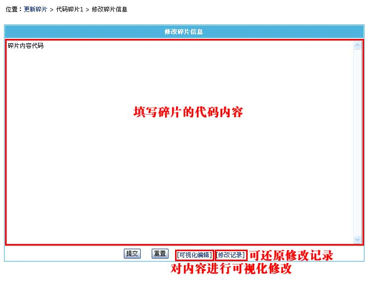 |
| 3、更新碎片的信息后，生成模板调用碎片的页面就可以看到我们推送或增加的碎片信息。 |
| 七、管理碎片分类 |
| 碎片分类方便统一管理碎片，在碎片非常多的情况下可以对碎片进行分类更新与管理。 |
| 1、登录后台，单击“栏目”菜单，选择“管理碎片分类”子菜单，进入管理碎片分类界面： |
| 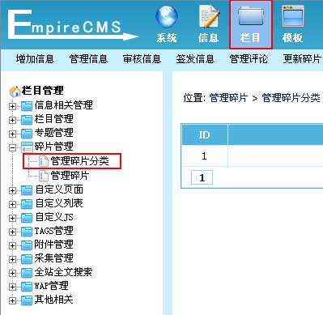 |
| 2、进入管理碎片分类界面，如下图： |
| 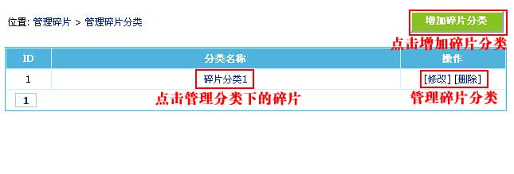 |